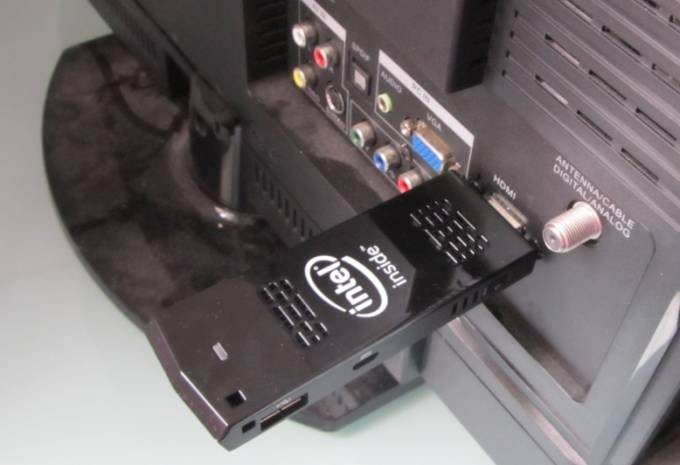

Intel launched a tiny computer called the Intel Compute Stick earlier this year. It looks like a chunky USB flash drive, but instead of plugging it into your computer to add storage, you plug it into the HDMI port of your TV or monitor to add a full-fledged computer.
The first model to ship featured an Intel Atom Bay Trail processor, 2GB of RAM, 32GB of storage, and Windows 8.1 software. This week Intel will start selling a second model: a cheaper version with 1GB of RAM, 8GB of storage, and Ubuntu Linux.
But what if you want to run Ubuntu on the model that has more memory and storage?

You can do that… it just takes a little work.
The Intel Compute Stick with Ubuntu comes with a slightly modified version of Canonical’s Ubuntu operating system. Intel has patched the operating system with an Intel graphics driver and a Realtek driver for WiFi and Bluetooth.
As I discovered when I tested the Windows version of the Compute Stick earlier this year, you can load Ubuntu on a microSD card (or USB flash drive) and get it to boot on the PC-on-a-stick. But WiFi won’t work out of the box.
I should probably point out here that Intel doesn’t currently recommend replacing the operating system, and in fact says installing any OS that’s not officially supported will void your warranty.
Update: Now we’ve got step-by-step instructions for installing Ubuntu with working WiFi, Bluetooth and audio… and without requesting any drivers from Intel or Realtek.
The original article continues below.
Now that the Ubuntu model is ready to ship, I asked Intel if they’d be releasing a downloading image that makes it easy to install Ubuntu on the Windows model. The answer is no, because Intel only has the rights to distribute Ubuntu pre-loaded on its mini computers. The company doesn’t have the rights to post a downloadable image on its website.

But… here’s how you can basically build your own Ubuntu Compute Stick:
- Download and install latest build of Ubuntu from Ubuntu.com.
- If you need help with that step, check out our Compute Stick review for tips on setting the boot options so you can load Ubuntu. Note that you may also be able to use a USB flash drive rather than a microSD card if you use a USB hub.
- Download and install the latest Intel graphics stack from 0.1.org.
- Contact Realtek and ask for a wireless driver.
That last step’s kind of a pain. But Intel says Realtek currently has no plans to release the wireless driver publicly, however the company will make it available to customers that ask.
Maybe if enough people ask, Realtek will just post a link on its website.
It’s worth noting that even with Windows, the Intel Compute Stick has lousy WiFi reception: it works best when it’s sitting right next to the router. So you might want to skip that last step and pick up a cheap USB WiFi dongle.
There may be other options: Ian Morrison has compiled his own build of Ubuntu 14.10 for PC sticks including the Intel Compute Stick, and it has WiFi drivers pre-installed.
I’ve had mixed results with Morrison’s disk image. The first time I tried loading my Compute Stick review unit with his liveUSB image, it detected my wireless networks but wouldn’t connect. After rebooting, it looks like the wireless hardware was disabled. I need to take some time to run a few more tests to see if I can pinpoint the problem.
Update: Morrison’s latest build of Ubuntu 14.04 now includes working WiFi, Bluetooth, and audio. You can follow our guide for downloading and installing the operating system.